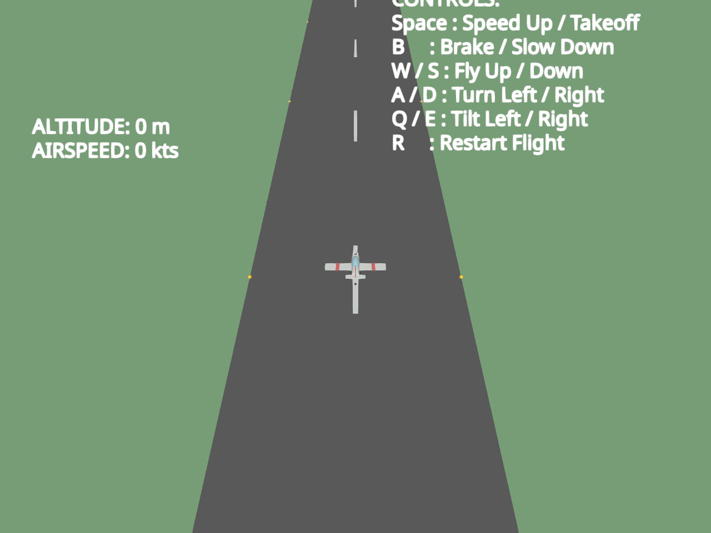

Note
Go to the end to download the full example code.
Interactive 3D Flight Simulator in FURY#
In this tutorial, we will write a fully functional flight simulator with procedural world generation, composite actor transformation, and real-time event-loop rendering.
Note
This script is currently a work-in-progress (WIP). Feel free to adapt, improve, and extend this codebase to implement advanced mechanics or visual enhancements!
import numpy as np
from fury import actor, ui, window
from fury.window import EventType
Let’s define some variables and their description:
- V_FWD: numpy.ndarray, shape (3,)
Primary forward-facing direction baseline tracking vector.
- V_UP: numpy.ndarray, shape (3,)
Primary vertical orientation baseline tracking vector.
- V_R: numpy.ndarray, shape (3,)
Primary lateral orientation baseline tracking vector.
- V_ZERO: numpy.ndarray, shape (3,)
Zero-coordinate reference origin vector.
- state: dict
Active global configuration tracker managing physical attributes.
- SPAWN_DIST: float
Maximum coordinate offset boundary to populate environment components.
- DESPAWN_DIST: float
Minimum viewport-relative depth to purge out-of-range objects.
- CLOUD_COUNT: int
Total persistent active instances representing sky assets.
- TREE_COUNT: int
Total active instances representing vegetation structures.
- MOUNTAIN_COUNT: int
Total active instances representing background obstacle terrain.
V_FWD = np.array([0.0, 0.0, 1.0])
V_UP = np.array([0.0, 1.0, 0.0])
V_R = np.array([1.0, 0.0, 0.0])
V_ZERO = np.array([0.0, 0.0, 0.0])
state = {
"is_playing": True,
"score": 0.0,
"speed": 0.0,
"max_speed": 180.0,
"takeoff_speed": 60.0,
"player_pos": np.array([0.0, 2.0, 0.0]),
"player_quat": np.array([0.0, 0.0, 0.0, 1.0]),
"cam_pos": np.array([0.0, 50.0, -50.0]),
"cam_up": np.array([0.0, 1.0, 0.0]),
"pitch_rate": 0.0,
"roll_rate": 0.0,
"yaw_rate": 0.0,
"keys": set(),
"tick_count": 0,
}
SPAWN_DIST = 1500.0
DESPAWN_DIST = 300.0
SPAWN_DIST_SQ = (SPAWN_DIST * 2.0) ** 2
CLOUD_COUNT = 70
TREE_COUNT = 120
MOUNTAIN_COUNT = 30
- Before we fly, we need a way to spin and turn our aircraft smoothly in 3D space.
If we try to use standard pitch, roll, and yaw angles directly, we will quickly run into the “gimbal lock” where our control axes overlap and trap us in a 2D plane. To avoid this, we represent our plane’s orientation using Quaternions. Let’s write some handy helper functions to turn angles into rotations, multiply them together, and rotate our direction vectors.
def axis_angle_to_quat(axis, angle_deg):
"""
Convert an axis-angle rotation representation into a quaternion.
Calculates the standard half-angle quaternion conversion:
q = [ axis * sin(theta/2), cos(theta/2) ]
Parameters
----------
axis : ndarray, shape (3,)
The spatial unit vector axis around which rotation occurs.
angle_deg : float
The rotation magnitude specified in degrees.
Returns
-------
ndarray, shape (4,)
The normalized quaternion vector [x, y, z, w].
"""
angle_rad = np.radians(angle_deg)
s = np.sin(angle_rad / 2.0)
c = np.cos(angle_rad / 2.0)
return np.array([axis[0] * s, axis[1] * s, axis[2] * s, c])
def quat_mult(q1, q2):
"""
Compute the Hamilton product of two orientation quaternions.
This operation corresponds to multiplying two complex numbers, composing two
successive spatial rotations without experiencing matrix degeneration.
Parameters
----------
q1 : ndarray, shape (4,)
The left-hand orientation quaternion operand.
q2 : ndarray, shape (4,)
The right-hand orientation quaternion operand.
Returns
-------
ndarray, shape (4,)
The normalized combined quaternion tracking successive rotations.
"""
x1, y1, z1, w1 = q1
x2, y2, z2, w2 = q2
w = w1 * w2 - x1 * x2 - y1 * y2 - z1 * z2
x = w1 * x2 + x1 * w2 + y1 * z2 - z1 * y2
y = w1 * y2 - x1 * z2 + y1 * w2 + z1 * x2
z = w1 * z2 + x1 * y2 - y1 * x2 + z1 * w2
q = np.array([x, y, z, w])
return q / np.linalg.norm(q)
def rotate_vector(quat, vec):
"""
Apply a quaternion rotation to a three-dimensional spatial vector.
Utilizes an optimized variation of Rodrigues' rotation formula:
v' = v + 2 * cross(q_vec, cross(q_vec, v) + q_w * v)
This calculation avoids constructing expensive 3x3 rotation matrices, reducing
computational overhead within the rendering event loop.
Parameters
----------
quat : ndarray, shape (4,)
The active rotation quaternion.
vec : ndarray, shape (3,)
The target vector in coordinate space to undergo transformation.
Returns
-------
ndarray, shape (3,)
The transformed position or direction vector in the scene.
"""
q_vec = quat[:3]
q_w = quat[3]
uv = np.cross(q_vec, vec)
uuv = np.cross(q_vec, uv)
return vec + 2.0 * (q_w * uv + uuv)
def get_surface_height(pos):
"""
Evaluate the elevation profile of the runway surface at a position.
Identifies if the entity coordinates sit within the runway's lateral borders.
If true, the height threshold is set to the elevated asphalt layer, preventing
the airplane wheels from sinking into the ground plane.
Parameters
----------
pos : ndarray, shape (3,)
The tracking coordinates of the entity querying ground level.
Returns
-------
float
The calculated target height reference point.
"""
return 0.55 if abs(pos[0]) <= 12.0 else 0.0
- Now that our math works, we need a 3D world to visualize it. FURY organizes everything
inside a Scene. Let’s initialize it, paint the sky blue, and drop in a giant flat box to act as our endless grassy ground. We’ll also place a bright sphere far away to represent our sun.
scene = window.Scene()
scene.background = (0.45, 0.65, 0.95)
ground = actor.box(
centers=np.array([V_ZERO]),
colors=(0.28, 0.52, 0.28),
scales=(2000, 1, 2000),
)
scene.add(ground)
sun = actor.sphere(
centers=np.array([V_ZERO]),
colors=(1.0, 0.95, 0.85),
radii=35.0,
)
scene.add(sun)
- Every pilot needs an airfield. However, constructing a realistic runway across huge
distances can cause single-precision floating-point jitter on the GPU. To keep performance in check, we build a RunwayManager. It dynamically moves the mesh and its lights along with our plane’s Z position, tricking the pilot’s eyes.
class RunwayManager:
"""Coordinate procedural runway placement and light transitions."""
def __init__(self):
"""
Construct the structural runway parts and alignment coordinates.
Assembles structural runway boundaries, repeating dashboard lanes, and active
landing lights. These actors are placed in the scene graph as persistent meshes.
"""
self.runway = actor.box(
centers=np.array([V_ZERO]),
colors=(0.15, 0.15, 0.15),
scales=(24, 1.1, 2000),
)
scene.add(self.runway)
self.dashes = []
for z in range(-1000, 2000, 40):
dash = actor.box(
centers=np.array([V_ZERO]),
colors=(0.9, 0.9, 0.9),
scales=(0.6, 0.02, 12.0),
)
dash.local.position = [0.0, 0.56, float(z)]
scene.add(dash)
self.dashes.append(dash)
self.lights = []
c = (0.95, 0.8, 0.2)
for z in range(-1000, 2000, 50):
l1 = actor.sphere(centers=np.array([V_ZERO]), colors=c, radii=0.25)
l1.local.position = [-12.0, 0.58, float(z)]
l2 = actor.sphere(centers=np.array([V_ZERO]), colors=c, radii=0.25)
l2.local.position = [12.0, 0.58, float(z)]
scene.add(l1)
scene.add(l2)
self.lights.extend([l1, l2])
def update(self, p_pos):
"""
Re-align the runway structure relative to the player position.
Calculates distance offsets between each dash/light and the player. If an
element is left too far behind, it is projected forward along the Z axis,
generating an endless landing strip.
Parameters
----------
p_pos : ndarray, shape (3,)
The active position coordinates of the aircraft.
"""
pz = p_pos[2]
self.runway.local.position = [0.0, 0.0, pz]
for dash in self.dashes:
dz = dash.local.position[2]
if dz < pz - 1000:
dash.local.position = [0.0, 0.56, dz + 3000]
elif dz > pz + 2000:
dash.local.position = [0.0, 0.56, dz - 3000]
for light in self.lights:
lz = light.local.position[2]
if lz < pz - 1000:
light.local.position = [
light.local.position[0],
0.58,
lz + 3000,
]
elif lz > pz + 2000:
light.local.position = [
light.local.position[0],
0.58,
lz - 3000,
]
runway_mgr = RunwayManager()
- Who says you need complex CAD modeling skills? Here we compose a beautiful plane
by combining basic shapes (cylinders, cones, boxes, and spheres). We store their local relative offsets from the plane’s center of gravity. When we update the plane’s flight coordinates, we apply our quaternion rotation to project each sub-part cleanly.
class Aircraft:
"""
Construct and drive the structural components of the vehicle.
FURY supports compound structural representations by combining atomic geometric
actors such as cylinders, cones, and spheres under a centralized positional state.
"""
def __init__(self):
"""Assemble the geometric components of the airplane."""
c0 = np.array([V_ZERO])
self.fuselage = actor.cylinder(
centers=c0,
directions=np.array([V_FWD]),
colors=(0.9, 0.9, 0.9),
height=3.2,
radii=0.45,
)
self.nose = actor.cone(
centers=c0,
directions=np.array([V_FWD]),
colors=(0.85, 0.2, 0.2),
height=1.0,
radii=0.45,
)
self.canopy = actor.ellipsoid(
centers=c0,
lengths=(0.4, 0.35, 1.1),
colors=(0.3, 0.8, 0.95),
opacity=0.65,
)
self.wings = actor.box(
centers=c0, colors=(0.9, 0.9, 0.9), scales=(6.8, 0.08, 1.2)
)
self.wing_stripe_l = actor.box(
centers=c0, colors=(0.85, 0.2, 0.2), scales=(0.4, 0.1, 1.22)
)
self.wing_stripe_r = actor.box(
centers=c0, colors=(0.85, 0.2, 0.2), scales=(0.4, 0.1, 1.22)
)
self.wing_light_l = actor.sphere(centers=c0, colors=(0.9, 0.1, 0.1), radii=0.08)
self.wing_light_r = actor.sphere(centers=c0, colors=(0.1, 0.9, 0.1), radii=0.08)
self.tail_fin = actor.box(
centers=c0, colors=(0.85, 0.2, 0.2), scales=(0.1, 1.2, 0.8)
)
self.tail_wings = actor.box(
centers=c0, colors=(0.9, 0.9, 0.9), scales=(2.2, 0.08, 0.6)
)
self.prop_spinner = actor.sphere(
centers=c0, colors=(0.25, 0.25, 0.25), radii=0.15
)
self.prop_blades = actor.box(
centers=c0, colors=(0.1, 0.1, 0.1), scales=(0.06, 1.4, 0.03)
)
self.strut_l = actor.box(
centers=c0, colors=(0.6, 0.6, 0.6), scales=(0.06, 0.9, 0.06)
)
self.strut_r = actor.box(
centers=c0, colors=(0.6, 0.6, 0.6), scales=(0.06, 0.9, 0.06)
)
self.wheel_l = actor.sphere(centers=c0, colors=(0.15, 0.15, 0.15), radii=0.2)
self.wheel_r = actor.sphere(centers=c0, colors=(0.15, 0.15, 0.15), radii=0.2)
self.strut_t = actor.box(
centers=c0, colors=(0.6, 0.6, 0.6), scales=(0.05, 0.8, 0.05)
)
self.wheel_t = actor.sphere(centers=c0, colors=(0.15, 0.15, 0.15), radii=0.15)
self.parts = [
self.fuselage,
self.nose,
self.canopy,
self.wings,
self.wing_stripe_l,
self.wing_stripe_r,
self.wing_light_l,
self.wing_light_r,
self.tail_fin,
self.tail_wings,
self.prop_spinner,
self.prop_blades,
self.strut_l,
self.strut_r,
self.wheel_l,
self.wheel_r,
self.strut_t,
self.wheel_t,
]
for p in self.parts:
scene.add(p)
self.prop_angle = 0.0
# Offsets are defined in the coordinate frame of the aircraft.
# Negative Z values represent positions behind the center of gravity.
self.offsets = {
self.fuselage: np.array([0.0, 0.0, 0.0]),
self.nose: np.array([0.0, 0.0, 1.6]),
self.canopy: np.array([0.0, 0.35, 0.3]),
self.wings: np.array([0.0, -0.05, 0.0]),
self.wing_stripe_l: np.array([-2.0, -0.04, 0.0]),
self.wing_stripe_r: np.array([2.0, -0.04, 0.0]),
self.wing_light_l: np.array([-3.4, -0.04, 0.0]),
self.wing_light_r: np.array([3.4, -0.04, 0.0]),
self.tail_fin: np.array([0.0, 0.6, -1.6]),
self.tail_wings: np.array([0.0, 0.0, -1.8]),
self.prop_spinner: np.array([0.0, 0.0, 2.1]),
self.prop_blades: np.array([0.0, 0.0, 2.12]),
self.strut_l: np.array([-0.4, -0.85, 0.5]),
self.strut_r: np.array([0.4, -0.85, 0.5]),
self.wheel_l: np.array([-0.4, -1.35, 0.5]),
self.wheel_r: np.array([0.4, -1.35, 0.5]),
self.strut_t: np.array([0.0, -0.85, -1.5]),
self.wheel_t: np.array([0.0, -1.3, -1.5]),
}
def update_transform(self, pos, quat, dt=0.02):
"""
Recalculate internal part transforms relative to current state.
Each individual sub-actor is rotated and translated relative to the root pivot
offset in absolute world coordinates.
Parameters
----------
pos : ndarray, shape (3,)
The absolute position coordinates tracking the center of gravity.
quat : ndarray, shape (4,)
The current orientation quaternion tracking physical attitude.
dt : float, optional
The delta-time step size for propagating rotation variables.
"""
self.prop_angle = (self.prop_angle + 1200.0 * dt) % 360.0
prop_spin_quat = axis_angle_to_quat(V_FWD, self.prop_angle)
prop_total_quat = quat_mult(quat, prop_spin_quat)
# Iterate and project each part based on parent coordinates.
for p in self.parts:
p.local.position = pos + rotate_vector(quat, self.offsets[p])
p.local.rotation = prop_total_quat if p is self.prop_blades else quat
player = Aircraft()
player.update_transform(state["player_pos"], state["player_quat"], 0.0)
- Flying over empty fields gets boring quickly. To make our world immersive, let’s write
classes to assemble procedural terrain assets. Our low-poly Tree model stacks colored cones over a cylinder trunk, and our Mountain model places a snowy cone cap on top of a larger, rocky base.
class Tree:
"""Assemble a simplified low-poly tree actor from cylinders and cones."""
def __init__(self):
"""Construct the trunk and conical foliage structures."""
c0 = np.array([V_ZERO])
self.trunk = actor.cylinder(
centers=c0,
directions=np.array([V_UP]),
colors=(0.4, 0.25, 0.15),
height=3.5,
radii=0.35,
)
self.foliage1 = actor.cone(
centers=c0,
directions=np.array([V_UP]),
colors=(0.15, 0.45, 0.2),
height=5.0,
radii=1.8,
)
self.foliage2 = actor.cone(
centers=c0,
directions=np.array([V_UP]),
colors=(0.2, 0.55, 0.25),
height=4.0,
radii=1.3,
)
self.parts = [self.trunk, self.foliage1, self.foliage2]
for p in self.parts:
scene.add(p)
def set_position(self, pos):
"""
Update absolute offsets for trunk and foliage parts.
Parameters
----------
pos : ndarray, shape (3,)
The ground center position coordinates where the tree is placed.
"""
self.trunk.local.position = pos + np.array([0.0, 1.75, 0.0])
self.foliage1.local.position = pos + np.array([0.0, 3.5, 0.0])
self.foliage2.local.position = pos + np.array([0.0, 5.5, 0.0])
class Mountain:
"""Assemble a procedural high-altitude peak from stacked cones."""
def __init__(self):
"""Configure dimensional scaling metrics and color materials."""
h = np.random.uniform(65.0, 135.0)
r = h * np.random.uniform(0.65, 0.85)
self.height = h
self.radius = r
cap_h = h * 0.25
c0 = np.array([V_ZERO])
self.base = actor.cone(
centers=c0,
directions=np.array([V_UP]),
colors=(0.42, 0.4, 0.4),
height=h,
radii=r,
)
self.cap = actor.cone(
centers=c0,
directions=np.array([V_UP]),
colors=(0.95, 0.95, 0.98),
height=cap_h,
radii=r * 0.25 * 1.04,
)
self.parts = [self.base, self.cap]
for p in self.parts:
scene.add(p)
def set_position(self, pos):
"""
Position structural cones relative to base offsets.
Parameters
----------
pos : ndarray, shape (3,)
The base coordinates representing the coordinate origin of the peak.
"""
self.base.local.position = pos + np.array([0.0, self.height / 2.0, 0.0])
self.cap.local.position = pos + np.array(
[0.0, self.height - (self.height * 0.25) / 2.0, 0.0]
)
- If we keep instantiating new trees and mountains as we fly, Python will run out of
memory and the CPU will stutter from allocations. Instead, we write a WorldManager that maintains a static pool of objects. When an object drifts behind us, we project it ahead of our plane. Continuous landscape generation without garbage-collection.
class WorldManager:
"""
Oversee spawning, despawning, and shifting of active terrain assets.
To support endless exploration in FURY without degrading framerates, we use a
relative distance-based pooling strategy. Out-of-bounds assets are projected
forward into the flight trajectory.
"""
def __init__(self):
"""Initialize terrain asset caches and populate local zones."""
self.clouds = []
self.trees = [Tree() for _ in range(TREE_COUNT)]
self.mountains = [Mountain() for _ in range(MOUNTAIN_COUNT)]
for tree in self.trees:
self._spawn_object(tree, initial=True)
for mtn in self.mountains:
self._spawn_object(mtn, initial=True)
for _ in range(CLOUD_COUNT):
base_radius = np.random.uniform(5.0, 10.0)
cloud_centers = np.array(
[
[0.0, 0.0, 0.0],
[-base_radius * 0.7, -base_radius * 0.1, 0.0],
[base_radius * 0.7, -base_radius * 0.1, 0.0],
[0.0, base_radius * 0.3, -base_radius * 0.2],
]
)
cloud_radii = np.array(
[
base_radius,
base_radius * 0.7,
base_radius * 0.8,
base_radius * 0.6,
]
)
cloud = actor.sphere(
centers=cloud_centers,
colors=(0.95, 0.95, 0.98),
radii=cloud_radii,
)
self.clouds.append(cloud)
self._spawn_object(cloud, initial=True)
scene.add(cloud)
def _spawn_object(self, obj, initial=False):
"""
Translate target entity forward into active spawn zones.
We define the spawn area relative to the aircraft's current trajectory
coordinates to ensure obstacles generate in the path of the flight.
Parameters
----------
obj : object
The physical FURY actor ensemble to position.
initial : bool, optional
Flag asserting whether initial spawning should distribute evenly.
"""
p_pos = state["player_pos"]
fwd = rotate_vector(state["player_quat"], V_FWD)
dist = np.random.uniform(-100.0 if initial else 150.0, SPAWN_DIST * 1.5)
sc = p_pos + fwd * dist
if isinstance(obj, Mountain):
side = 1.0 if np.random.rand() > 0.5 else -1.0
x_offset = side * np.random.uniform(160.0, 350.0)
spawn_pos = np.array(
[sc[0] + x_offset, 0.0, sc[2] + np.random.uniform(-100.0, 100.0)]
)
# Ensure mountains do not overlap the runway (X = -25 to 25 + radius)
min_mtn_x = obj.radius + 25.0
if abs(spawn_pos[0]) < min_mtn_x:
spawn_pos[0] = min_mtn_x if spawn_pos[0] >= 0 else -min_mtn_x
obj.set_position(spawn_pos)
elif isinstance(obj, Tree):
side = 1.0 if np.random.rand() > 0.5 else -1.0
x_offset = side * np.random.uniform(18.0, 150.0)
spawn_pos = np.array(
[sc[0] + x_offset, 0.0, sc[2] + np.random.uniform(-80.0, 80.0)]
)
# Ensure trees do not spawn on or near the runway (X = -20 to 20)
if abs(spawn_pos[0]) < 20.0:
spawn_pos[0] = 20.0 if spawn_pos[0] >= 0 else -20.0
obj.set_position(spawn_pos)
else:
spawn_y = max(60.0, p_pos[1] + np.random.uniform(-20.0, 150.0))
obj.local.position = np.array(
[
sc[0] + np.random.uniform(-150.0, 150.0),
spawn_y,
sc[2] + np.random.uniform(-100.0, 100.0),
]
)
def update(self):
"""
Audit and recycle out-of-bounds terrain actors continuously.
We use the dot product operation to determine if an object is positioned
behind the aircraft. If the distance exceeds our defined threshold, the
object is relocated ahead.
"""
p_pos = state["player_pos"]
fwd = rotate_vector(state["player_quat"], V_FWD)
for pool in [self.clouds, self.trees, self.mountains]:
for obj in pool:
if isinstance(obj, Tree):
obj_pos = np.array(obj.trunk.local.position)
elif isinstance(obj, Mountain):
obj_pos = np.array(obj.base.local.position)
else:
obj_pos = np.array(obj.local.position)
vec_to_obj = obj_pos - p_pos
if (
np.dot(vec_to_obj, fwd) < -DESPAWN_DIST
or np.sum(vec_to_obj**2) > SPAWN_DIST_SQ
):
self._spawn_object(obj)
world = WorldManager()
- Now we initialize FURY TextBlock2D screen overlay blocks to paint
live instrument displays directly onto our screen viewport, showing our altitude, speed, and score.
hud_telemetry = ui.TextBlock2D(
text="ALTITUDE: 0 m\nAIRSPEED: 0 kts",
position=(30, 678),
size=(350, 70),
font_size=18,
color=(1.0, 1.0, 1.0),
bold=True,
)
hud_keys = ui.TextBlock2D(
text=(
"CONTROLS:\n"
"Space : Speed Up / Takeoff\n"
"B : Brake / Slow Down\n"
"W / S : Fly Up / Down\n"
"A / D : Turn Left / Right\n"
"Q / E : Tilt Left / Right\n"
"R : Restart Flight"
),
position=(750, 30),
size=(250, 180),
font_size=18,
color=(1.0, 1.0, 1.0),
bold=True,
)
scene.add(hud_telemetry)
scene.add(hud_keys)
def disable_depth_testing(world_object):
if hasattr(world_object, "material") and world_object.material is not None:
world_object.material.depth_test = False
world_object.material.depth_write = False
if hasattr(world_object, "children"):
for child in world_object.children:
disable_depth_testing(child)
- Here we listen to keyboard events and store active states. We also write
a collision checking script. If the center coordinates of our airplane glide too close to mountain bounds or tree trunk geometries, we restart the game!
def restart_game():
"""Reset state tracking dictionaries and re-seed active terrain grids."""
state["is_playing"] = True
state["score"] = 0.0
state["speed"] = 0.0
state["player_pos"] = np.array([0.0, 2.0, 0.0])
state["player_quat"] = np.array([0.0, 0.0, 0.0, 1.0])
state["cam_pos"] = np.array([0.0, 150.0, -50.0])
state["cam_up"] = np.array([0.0, 1.0, 0.0])
state["pitch_rate"] = 0.0
state["roll_rate"] = 0.0
state["yaw_rate"] = 0.0
state["tick_count"] = 0
for pool in [world.clouds, world.trees, world.mountains]:
for obj in pool:
world._spawn_object(obj, initial=True)
def on_key_down(event):
"""
Track down-press keystrokes to register player inputs.
Parameters
----------
event : Event
The FURY/pygfx window event instance capturing keyboard states.
"""
state["keys"].add(event.key.lower())
if event.key.lower() == "r":
restart_game()
def on_key_up(event):
"""
Remove keystrokes from dictionary mapping upon physical release.
Parameters
----------
event : Event
The FURY/pygfx window event instance capturing keyboard states.
"""
if event.key.lower() in state["keys"]:
state["keys"].remove(event.key.lower())
def check_collisions():
"""
Evaluate proximity thresholds between aircraft coordinates and obstacles.
Returns
-------
bool
True if collision overlap occurs, else False.
"""
p_pos = state["player_pos"]
# Tree collision check: Models the foliage as cylindrical bounding boxes.
for tree in world.trees:
tree_base = np.array(tree.trunk.local.position) - np.array([0.0, 1.75, 0.0])
horiz_dist = np.linalg.norm(p_pos[[0, 2]] - tree_base[[0, 2]])
if horiz_dist < 3.0 and p_pos[1] < 7.5:
return True
# Mountain collision check: Models mountain actors as analytical cones.
# We calculate the radius at the plane's elevation height.
for mtn in world.mountains:
mtn_base = np.array(mtn.base.local.position) - np.array(
[0.0, mtn.height / 2.0, 0.0]
)
h = mtn.height
r = mtn.radius
if p_pos[1] < h:
horiz_dist = np.linalg.norm(p_pos[[0, 2]] - mtn_base[[0, 2]])
r_at_y = r * (1.0 - p_pos[1] / h)
if horiz_dist < r_at_y + 3.0:
return True
return False
def consume_mouse(event):
"""
Bypass standard cursor events to preserve chase-camera integrity.
Parameters
----------
event : Event
The active cursor event dispatched by the show manager.
"""
pass
- This is where our virtual world comes alive! During each frame step, we calculate
pitch, roll, and yaw input rates. We integrate lift factors based on speed and adjust our local coordinate direction vectors to smoothly transition our chase-camera coordinates directly behind the plane’s exhaust.
def game_tick(showm):
"""
Integrate frame delta physics, coordinate positions, and render.
Driven inside the FURY core event loop, this function computes physical attitude
vectors and feeds positional parameters to standard viewport matrices.
Parameters
----------
showm : ShowManager
The main FURY workspace orchestration pipeline instance.
"""
dt = 0.02
if not state["is_playing"]:
return
keys = state["keys"]
# Derive dynamic unit direction vectors using the aircraft's orientation.
fwd = rotate_vector(state["player_quat"], V_FWD)
up = rotate_vector(state["player_quat"], V_UP)
right = rotate_vector(state["player_quat"], V_R)
min_y = get_surface_height(state["player_pos"]) + 1.55
# Thrust and engine mapping:
# Space accelerates; Enter acts as an airbrake.
if " " in keys:
state["speed"] += 50.0 * dt
elif "b" in keys:
state["speed"] -= 50.0 * dt
else:
state["speed"] -= 5.0 * dt
# Pitch-coupled drag: Flying upward converts kinetic energy into potential altitude.
state["speed"] -= fwd[1] * 25.0 * dt
min_speed = 40.0 if state["player_pos"][1] > min_y + 1.0 else 0.0
state["speed"] = np.clip(state["speed"], min_speed, state["max_speed"])
target_pitch, target_roll, target_yaw = 0.0, 0.0, 0.0
# User input mapping:
# W/S controls pitch; E/Q controls roll; A/D controls yaw.
if "s" in keys:
target_pitch += 80.0 # Nose Down
if "w" in keys:
target_pitch -= 80.0 # Nose Up
if "e" in keys:
target_roll += 120.0 # Roll Left
if "q" in keys:
target_roll -= 120.0 # Roll Right
if "d" in keys:
target_yaw -= 50.0 # Yaw Left
if "a" in keys:
target_yaw += 50.0 # Yaw Right
# Apply rotational damping to avoid sudden direction changes.
state["pitch_rate"] += (target_pitch - state["pitch_rate"]) * 12.0 * dt
state["roll_rate"] += (target_roll - state["roll_rate"]) * 12.0 * dt
state["yaw_rate"] += (target_yaw - state["yaw_rate"]) * 12.0 * dt
# Auto-stabilization logic:
# Gently corrects roll when no inputs are detected, helping stabilize flight.
if not ("a" in keys or "d" in keys):
state["roll_rate"] += (-right[1] * 100.0) * dt
if not ("w" in keys or "s" in keys):
state["pitch_rate"] += (fwd[1] * 50.0) * dt
# Convert Euler rate changes to quaternion deltas and apply to state.
qx = axis_angle_to_quat(V_R, state["pitch_rate"] * dt)
qy = axis_angle_to_quat(V_UP, state["yaw_rate"] * dt)
qz = axis_angle_to_quat(V_FWD, state["roll_rate"] * dt)
rot_delta = quat_mult(qy, quat_mult(qx, qz))
state["player_quat"] = quat_mult(state["player_quat"], rot_delta)
# Simplified lift calculation:
# Lift is proportional to speed and scales based on the aircraft's vertical axis.
lift = (
25.0
* np.clip(state["speed"] / state["takeoff_speed"], 0.0, 1.0)
* max(0.0, up[1])
)
# Integrate velocities using Euler's method.
vel = fwd * state["speed"]
vel[1] += lift - 25.0
state["player_pos"] += vel * dt
# Ground limits check:
# Stops the aircraft from falling below the runway and resets rotation angles.
if state["player_pos"][1] <= min_y:
state["player_pos"][1] = min_y
if state["speed"] < state["takeoff_speed"]:
fwd_flat = np.array([fwd[0], 0.0, fwd[2]])
if np.linalg.norm(fwd_flat) > 0.001:
state["player_quat"] = axis_angle_to_quat(
V_UP, np.degrees(np.arctan2(fwd_flat[0], fwd_flat[2]))
)
state["pitch_rate"], state["roll_rate"] = 0.0, 0.0
# Align static environmental lighting and actor coordinates.
ground.local.position = [
state["player_pos"][0],
-0.5,
state["player_pos"][2],
]
sun.local.position = [
state["player_pos"][0],
300.0,
state["player_pos"][2] + 800.0,
]
runway_mgr.update(state["player_pos"])
player.update_transform(state["player_pos"], state["player_quat"], dt)
world.update()
# Update GUI labels.
state["score"] += state["speed"] * dt * 0.1
alt = max(0, int(state["player_pos"][1] - min_y))
speed = int(state["speed"])
hud_telemetry.message = f"ALTITUDE: {alt} m\nAIRSPEED: {speed} kts"
# Reposition UI elements dynamically relative to screen size.
w, h = showm.renderer.logical_size
hud_keys.set_position((w - hud_keys.size[0], h - hud_keys.size[1]))
hud_telemetry.set_position((30, h - 90))
if check_collisions():
state["is_playing"] = False
restart_game()
# Dynamic chase-camera tracking:
# Calculates the target camera position trailing behind the fuselage.
fwd_now = rotate_vector(state["player_quat"], V_FWD)
up_now = rotate_vector(state["player_quat"], V_UP)
target_cam_pos = state["player_pos"] - fwd_now * 50.0 + up_now * 8.0
cam_min_y = get_surface_height(state["cam_pos"]) + 1.0
if target_cam_pos[1] < cam_min_y:
target_cam_pos[1] = cam_min_y
# Interpolate camera coordinates to smooth out tracking jitter.
state["cam_pos"] += (target_cam_pos - state["cam_pos"]) * 10.0 * dt
state["cam_up"] += (up_now - state["cam_up"]) * 5.0 * dt
state["cam_up"] /= np.linalg.norm(state["cam_up"])
camera = showm.screens[0].camera if hasattr(showm, "screens") else scene.camera()
camera.local.position = state["cam_pos"]
camera.look_at(state["player_pos"])
camera.reference_up = state["cam_up"]
showm.render()
- Now we instantiate the FURY ShowManager, register global event handlers to hook up
player control keys, block default camera behaviors to let our custom chase camera drive, and launch our flight simulator!
if __name__ == "__main__":
showm = window.ShowManager(
scene=scene, size=(1024, 768), title="True 3D Flight Simulator"
)
showm.renderer.add_event_handler(on_key_down, EventType.KEY_DOWN)
showm.renderer.add_event_handler(on_key_up, EventType.KEY_UP)
# Disable default mouse controls to preserve chase camera tracking.
showm.screens[0].controller.enabled = False
# Ensure UI elements always render on top
disable_depth_testing(scene.ui_scene)
showm.register_callback(game_tick, 0.01, True, "GameLoop", showm)
showm.start()

Total running time of the script: (0 minutes 46.318 seconds)